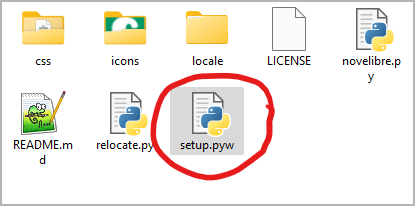

Preparations
Summary
In the following I will describe how to install novelibre. I also give some tips on setting up LibreOffice and OpenOffice to optimize the interaction with novelibre.
Installing and setting up novelibre
Setting up Writer
I assume that novelibre users are already familiar with LibreOffice or OpenOffice Writer. Therefore, I will only give a few brief tips that relate specifically to the interaction with novelibre.
Making the sections visible in the manuscript
An essential part of the workflow is writing with the Writer word processor. For this, novelibre creates editable manuscript files in the Open Document Text format that are meant to be temporary. These documents contain structural information that enables novelibre to recognize and correctly sort the sections when reading them back.
For the whole thing to work, it is extremely important that you only write within the section boundaries. To do this, you might want to make the section boundaries visible in the Writer settings.
The following picture shows a LibreOffice 7.6 screenshot. Make sure the Section boundaries box in the Tools > Options > Application Colors dialog is ticked. Writing outsides the visible section boundaries has no effect on your novelibre project.

Hint
With OpenOffice and older versions of LibreOffice the dialog may be called “Appearance” instead of “Application Colors”.
Enabling quick access to the styles
novelibre strongly supports the use of formatting styles instead of direct formatting. If you want to emphasize parts of the text while writing, start a new section, or apply a special paragraph format, you may find the formatting styles toolbar useful, which is available in newer versions of LibreOffice.
If your version of Writer does not offer such a toolbar, you can install the emph extension.

Docking the Navigator
To quickly find the chapters and sections of your novel in Writer, it
is best to keep the Navigator in sight. I prefer to dock it to the left
of the work area. To do this, first press F5 to open the Navigator.
By default, it appears as a pop-up window that can be placed anywhere
on the screen. To dock it, double-click in a free gray space while holding
down the Ctrl key, as shown in the following image.
The following picture shows a LibreOffice Writer screenshot. The red “X” indicates the position for double-clicking.

Tip
The Navigator displays a confusing wealth of information. It is best to reduce this to the headings first. To do this, select “Headings” at the top of the tree and then click on the “Content Navigation View” icon. This works if a document containing headings is loaded.
The following picture shows a LibreOffice Writer screenshot. The red “O” indicates the icon to click on.

Customizing the look of your manuscript
The manuscript created by novelibre has a layout with 30 lines per page of up to 60 fixed-width characters each. That fits to the “standard manuscript format” which is widely used to provide an overview of the total number of pages of a work to be printed.
However, the set font “Courier New” is only available for Windows, and it is not particularly attractive (I, for my part, have installed the free Courier Prime font on Windows and Linux, which gives me a pleasant typewriter feel).
In addition, hyphenation is turned off, and the page size is set to A4, which is not the worldwide standard.
That’s not for you? No problem. This is what the document templates in Writer are for. So if you don’t like the look of the generated manuscript, simply apply a template that suits your needs and tastes. Perhaps you have to design your favorite template first, but your knowledge of this technique will pay off when it comes to designing print pages for self-publishing.
So if you have got a document template or a document with the styles you want to work with, novelibre can use them for export. For this, simply select the text document or the text document template in the export options.
Tip
The novelibre wiki provides some tutorial pages on this topic.
Tip
If you prefer simple blank lines instead of the three-asterisks section separators in your final document, you can achieve this using “Find and replace”. This is particularly convenient with a macro that comes with the novelibre-tools extension.
Tip
For switching between different document templates in Writer, I recommend my Style switcher extension, that allows you to customize your manuscript with a single mouse click.
Loading a template or changing the default font and page size has no impact on reimporting the document with novelibre.